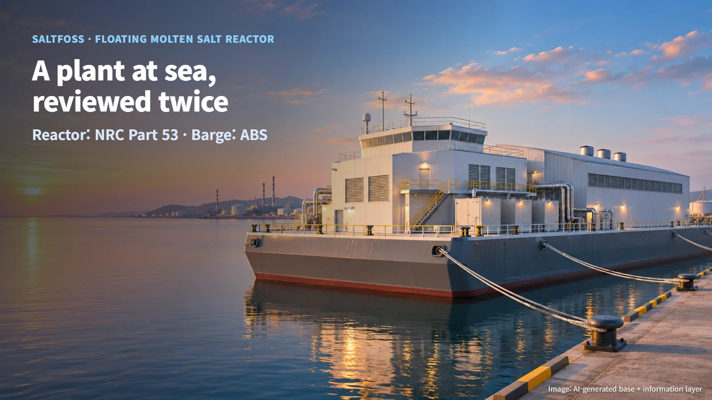
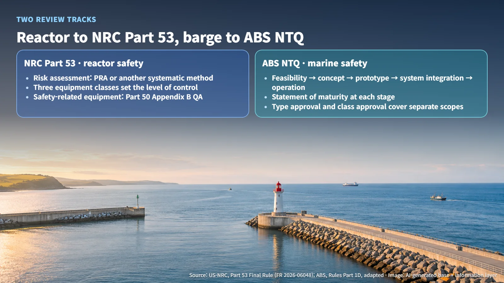
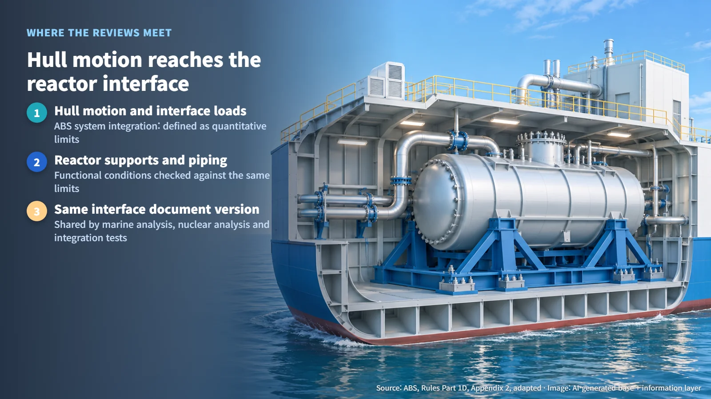
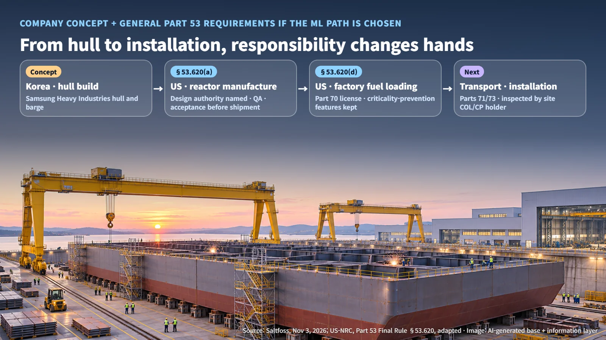

Denmark · United States · Korea · Marine Nuclear
Who Reviews a Nuclear Plant at Sea Twice? Saltfoss's Floating Molten Salt Reactor, the NRC–ABS Dual Path, and a Korea–US Build Split
Saltfoss has filed a letter of intent for NRC pre-application engagement on its floating molten salt reactor, with ABS reviewing the barge and a Korea–US build split planned.
When people hear about a nuclear power plant floating at sea, the first question is often whether a reactor can sit safely on a vessel that rolls with the waves. A reactor mounted on a barge (a flat-bottomed vessel with no propulsion of its own, moved by towing) has to prove its safety twice: once as a nuclear reactor and once as a ship. On November 3, 2026, Saltfoss announced that it had submitted a letter of intent for pre-application engagement to the US Nuclear Regulatory Commission (NRC), and with that announcement the shape of this "double review" has started to come into view. Last month this blog looked at the floating nuclear plant agreement between Rosatom and Indonesia; this time the focus is on how the review itself is structured.

One Letter Opens the Process: Pre-Application Is the Current Stage
Saltfoss said it has submitted a letter of intent to begin NRC pre-application engagement for its floating molten salt reactor, the seaMSR-100, and its Molten Salt Power Barge. A molten salt reactor uses melted salt as its fuel or coolant. Pre-application engagement is the process in which a developer and the regulator agree on the issues to be addressed, and the order in which to address them, before a formal license application is filed.
The next step the company has laid out is a target of submitting a Regulatory Engagement Plan (REP) in the first quarter of 2027. The REP is a planned document that will set out the topics and schedule for further engagement, and the company says it is pursuing the Part 53 pathway. The full text of the letter of intent submitted to the NRC and any license application have not been published. Saltfoss also plans to work in parallel with Korea's Nuclear Safety and Security Commission (NSSC) to align its application pathway.
So the significance of this stage is that a formal conversation with the US regulator has begun, and the agenda for that conversation is scheduled to appear in the first quarter of 2027. Dates for completing the review and starting construction will be set by later decisions.
The Reactor Goes to NRC Part 53, the Barge Goes to ABS
On the reactor side, the governing standard is Part 53, a final rule published in the Federal Register on March 30, 2026. The NRC describes it as a risk-informed, performance-based, technology-inclusive regulatory framework. Under it, the applicant proposes safety demonstration methods suited to its own design and operating characteristics. Section 53.450 requires a probabilistic risk assessment (PRA, an analysis that estimates how often different accidents could occur and what consequences they would lead to) or another systematic risk evaluation, and Section 53.460 sorts equipment into three classes: safety-related, non-safety-related but safety-significant, and non-safety-significant. Safety-related equipment is subject to the quality assurance requirements of Appendix B to Part 50.
On the barge side, the review falls to ABS, a ship inspection and classification body, through its New Technology Qualification (NTQ). NTQ runs in five stages: feasibility, concept verification, prototype validation, system integration, and operation, with a statement of maturity issued at each stage. NTQ maturity statements, product type approval, and vessel classification each apply to a different subject.
Put side by side, the NRC asks, "How are accident risks assessed, and which equipment is managed with how much rigor?" ABS asks, "Up to what maturity stage has this new technology been verified?" The company's concept combines 100 MWe (megawatts of electrical output) modules on a single barge for up to 600 MWe. The calculation is 600 ÷ 100 = up to six modules per barge.

Where the Two Reviews Meet: The Hull–Reactor Interface
When waves tilt a barge, that motion passes directly into the supports and piping that hold the reactor. According to the ABS rules, the system integration stage evaluates mechanical, electrical, environmental, data, and human interfaces, and defines interface loads and dynamic conditions as quantitative limit values. Integration testing takes place in an actual or simulated operating environment, and the test plan and results report are submitted to ABS.
This is where the two reviews join into one. If the design limits for hull motion change, the inputs at the reactor's support and piping interfaces must be checked against them as well, and marine analysis, nuclear analysis, and testing all need to use the same version of the interface documents to reduce the chance of missing the effects of a change. On land, the fixed ground provides the reference surface for a nuclear plant; at sea, these interface documents take on that role.

If It Is Built in Korea and Fueled in the United States
In the company's concept, the hull and barge are built at Samsung Heavy Industries in Korea, while reactor assembly, fuel loading, and final integration take place at facilities in the United States. If Saltfoss chooses the manufacturing license (ML) pathway under Part 53, the following general requirements would apply at each step:
- Manufacturing: Under Section 53.620(a), the license identifies the holder of design authority, and the manufacturer maintains a design and manufacturing management organization and a quality assurance program. Before shipment, inspections, tests, and analyses confirm that fabrication has been completed in accordance with the manufacturing license.
- Factory fuel loading: Section 53.620(d) links the loading of unirradiated fresh fuel at the factory to a Part 70 license (Subpart H) and to features that prevent criticality. Criticality is the state in which a nuclear fission chain reaction sustains itself, and a configuration that prevents it is maintained throughout loading, storage, and transport.
- Transport and installation: Parts 71 and 73 apply to transporting a pre-fueled reactor, which moves either to a site holding a combined license (COL) or construction permit (CP), or is exported under Part 110. The COL or CP holder at the receiving site inspects for transport damage and confirms that interface requirements are met. The criticality-prevention features are then removed after a finding that the COL acceptance criteria are met, or after the CP conditions are satisfied and an operating license is issued.
In a cross-border build split, the responsible party changes at each step, so the records from each step need to pass to the next party without gaps. The actual pathway choice and allocation of responsibilities are matters to be confirmed in license and contract documents. Firm order volumes, project cost, a first commercial operation date, and power purchase agreements have not been announced.

Safety for a nuclear plant at sea comes from building both the reactor and the vessel well, and from connecting the interface between them and the records linking Korea and the United States into a single chain. The first checkpoint is the REP scheduled for the first quarter of 2027, and which licensing pathway and issues it sets out.